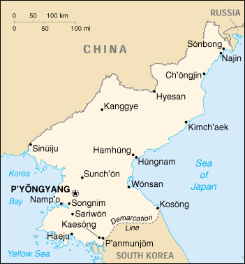

{kind=link}


| Korea, North |
|
|  | |
| Introduction |
Background: Following World War II, Korea was split into a northern, communist half and a southern, Western-oriented half. KIM Chong-il has ruled North Korea since his father and the country's founder, president KIM Il-sung, died in 1994. After decades of mismanagement, the North relies heavily on international food aid to feed its population, while continuing to expend resources to maintain an army of over 1 million, the fifth largest in the world. North Korea's long-range missile development and research into nuclear and chemical weapons are of major concern to the international community.
| Geography |
Location: Eastern Asia, northern half of the Korean Peninsula bordering the Korea Bay and the Sea of Japan, between China and South Korea
Geographic coordinates: 40 00 N, 127 00 E
Map references: Asia
Area:
total:
120,540 sq km
land:
120,410 sq km
water:
130 sq km
Area - comparative: slightly smaller than Mississippi
Land boundaries:
total:
1,673 km
border countries:
China 1,416 km, South Korea 238 km, Russia 19 km
Coastline: 2,495 km
Maritime claims:
territorial sea:
12 nm
exclusive economic zone:
200 nm
note:
military boundary line 50 nm in the Sea of Japan and the exclusive economic zone limit in the Yellow Sea where all foreign vessels and aircraft without permission are banned
Climate: temperate with rainfall concentrated in summer
Terrain: mostly hills and mountains separated by deep, narrow valleys; coastal plains wide in west, discontinuous in east
Elevation extremes:
lowest point:
Sea of Japan 0 m
highest point:
Paektu-san 2,744 m
Natural resources: coal, lead, tungsten, zinc, graphite, magnesite, iron ore, copper, gold, pyrites, salt, fluorspar, hydropower
Land use:
arable land:
14%
permanent crops:
2%
permanent pastures:
0%
forests and woodland:
61%
other:
23% (1993 est.)
Irrigated land: 14,600 sq km (1993 est.)
Natural hazards: late spring droughts often followed by severe flooding; occasional typhoons during the early fall
Environment - current issues: localized air pollution attributable to inadequate industrial controls; water pollution; inadequate supplies of potable water
Environment - international agreements:
party to:
Antarctic Treaty, Biodiversity, Climate Change, Environmental Modification, Ozone Layer Protection, Ship Pollution
signed, but not ratified:
Antarctic-Environmental Protocol, Law of the Sea
Geography - note: strategic location bordering China, South Korea, and Russia; mountainous interior is isolated and sparsely populated
| People |
Population: 21,687,550 (July 2000 est.)
Age structure:
0-14 years:
26% (male 2,843,250; female 2,705,206)
15-64 years:
68% (male 7,223,364; female 7,502,094)
65 years and over:
6% (male 448,242; female 965,394) (2000 est.)
Population growth rate: 1.35% (2000 est.)
Birth rate: 20.43 births/1,000 population (2000 est.)
Death rate: 6.88 deaths/1,000 population (2000 est.)
Net migration rate: 0 migrant(s)/1,000 population (2000 est.)
Sex ratio:
at birth:
1.05 male(s)/female
under 15 years:
1.05 male(s)/female
15-64 years:
0.96 male(s)/female
65 years and over:
0.46 male(s)/female
total population:
0.94 male(s)/female (2000 est.)
Infant mortality rate: 24.29 deaths/1,000 live births (2000 est.)
Life expectancy at birth:
total population:
70.74 years
male:
67.76 years
female:
73.86 years (2000 est.)
Total fertility rate: 2.3 children born/woman (2000 est.)
Nationality:
noun:
Korean(s)
adjective:
Korean
Ethnic groups: racially homogeneous; there is a small Chinese community and a few ethnic Japanese
Religions:
traditionally Buddhist and Confucianist, some Christian and syncretic Chondogyo (Religion of the Heavenly Way)
note:
autonomous religious activities now almost nonexistent; government-sponsored religious groups exist to provide illusion of religious freedom
Languages: Korean
Literacy:
definition:
age 15 and over can read and write Korean
total population:
99%
male:
99%
female:
99% (1990 est.)
| Government |
Country name:
conventional long form:
Democratic People's Republic of Korea
conventional short form:
North Korea
local long form:
Choson-minjujuui-inmin-konghwaguk
local short form:
none
note:
the North Koreans generally use the term "Choson" to refer to their country
abbreviation:
DPRK
Data code: KN
Government type: authoritarian socialist; one-man dictatorship
Capital: P'yongyang
Administrative divisions: 9 provinces (do, singular and plural) and 3 special cities* (si, singular and plural); Chagang-do (Chagang Province), Hamgyong-bukto (North Hamgyong Province), Hamgyong-namdo (South Hamgyong Province), Hwanghae-bukto (North Hwanghae Province), Hwanghae-namdo (South Hwanghae Province), Kaesong-si* (Kaesong City), Kangwon-do (Kangwon Province), Namp'o-si* (Namp'o City), P'yongan-bukto (North P'yongan Province), P'yongan-namdo (South P'yongan Province), P'yongyang-si* (P'yongyang City), Yanggang-do (Yanggang Province)
Independence:
9 September 1948, Democratic People's Republic of Korea (DPRK) Foundation Day
note:
15 August 1945, date of independence from the Japanese and celebrated in North Korea as National Liberation Day
National holiday: Foundation Day, 9 September (1948)
Constitution: adopted 1948, completely revised 27 December 1972, revised again in April 1992 and September 1998
Legal system: based on German civil law system with Japanese influences and Communist legal theory; no judicial review of legislative acts; has not accepted compulsory ICJ jurisdiction
Suffrage: 17 years of age; universal
Executive branch:
chief of state:
KIM Chong-il (since NA July 1994); note - in September 1998, KIM Chong-il was reelected Chairman of the National Defense Commission, a position accorded the nation's "highest administrative authority"; KIM Young-nam was named President of the Supreme People's Assembly Presidium and given the responsibility of representing the state and receiving diplomatic credentials
head of government:
Premier HONG Song-nam (since 5 September 1998)
cabinet:
Cabinet (Naegak), members, except for the Minister of People's Armed Forces, are appointed by the Supreme People's Assembly
elections:
premier elected by the Supreme People's Assembly; election last held NA 1998 (next to be held NA)
election results:
HONG Song-nam elected premier; percent of Supreme People's Assembly vote - NA
Legislative branch:
unicameral Supreme People's Assembly or Ch'oego Inmin Hoeui (687 seats; members elected by popular vote to serve five-year terms)
elections:
last held 26 July 1998 (next to be held NA 2003)
election results:
percent of vote by party - NA; seats by party - the KWP approves a single list of candidates who are elected without opposition; minor parties hold a few seats
Judicial branch: Central Court, judges are elected by the Supreme People's Assembly
Political parties and leaders: Chondoist Chongu Party [YU Mi-yong, chairwoman]; Korean Social Democratic Party [KIM Pyong-sik, chairman]; major party - Korean Workers' Party or KWP [KIM Chong-il, General Secretary]
International organization participation: ESCAP, FAO, ICAO, ICRM, IFAD, IFRCS, IHO, IMO, Intelsat (nonsignatory user), IOC, ISO, ITU, NAM, UN, UNCTAD, UNESCO, UNIDO, UPU, WFTU, WHO, WIPO, WMO, WToO
Diplomatic representation in the US: none; note - North Korea has a Permanent Mission to the UN in New York, headed by YI Hyong-chol
Diplomatic representation from the US: none (Swedish Embassy in P'yongyang represents the US as consular protecting power)
Flag description: three horizontal bands of blue (top), red (triple width), and blue; the red band is edged in white; on the hoist side of the red band is a white disk with a red five-pointed star
| Economy |
Economy - overview: North Korea ranks among the world's most centrally planned and isolated economies. The resulting economic distortions and the government's reluctance to publicize economic data limit the amount of reliable information available. State-owned industry produces nearly all manufactured goods, and the regime continues to devote its focus on heavy and military industries at the expense of light and consumer industries. Economic conditions remain stagnant at best and the country's deepening economic slide has been fueled by acute energy shortages, poorly maintained and aging industrial facilities, and a lack of new investment. The agricultural outlook, though slightly improved over previous years, remains weak. The combined effects of serious fertilizer shortages, successive natural disasters, and structural constraints - such as marginal arable land and a short growing season - have reduced staple grain output to more than 1 million tons less than what the country needs to meet even minimum international requirements. The steady flow of international food aid has been critical in meeting the population's basic food needs. The impact of other forms of humanitarian assistance such as medical supplies and agricultural assistance largely has been limited to local areas. Even with aid, malnutrition rates are among the world's highest and estimates of mortality range in the hundreds of thousands as a direct result of starvation or famine-related diseases.
GDP: purchasing power parity - $22.6 billion (1999 est.)
GDP - real growth rate: 1% (1999 est.)
GDP - per capita: purchasing power parity - $1,000 (1999 est.)
GDP - composition by sector:
agriculture:
30%
industry:
42%
services:
28% (1999 est.)
Population below poverty line: NA%
Household income or consumption by percentage share:
lowest 10%:
NA%
highest 10%:
NA%
Inflation rate (consumer prices): NA%
Labor force: 9.6 million
Labor force - by occupation: agricultural 36%, nonagricultural 64%
Unemployment rate: NA%
Budget:
revenues:
$NA
expenditures:
$NA, including capital expenditures of $NA
Industries: military products; machine building, electric power, chemicals; mining (coal, iron ore, magnesite, graphite, copper, zinc, lead, and precious metals), metallurgy; textiles, food processing; tourism
Industrial production growth rate: NA%
Electricity - production: 31.975 billion kWh (1998)
Electricity - production by source:
fossil fuel:
34.4%
hydro:
65.6%
nuclear:
0%
other:
0% (1998)
Electricity - consumption: 29.737 billion kWh (1998)
Electricity - exports: 0 kWh (1998)
Electricity - imports: 0 kWh (1998)
Agriculture - products: rice, corn, potatoes, soybeans, pulses; cattle, pigs, pork, eggs
Exports: $680 million (f.o.b., 1998 est.)
Exports - commodities: minerals, metallurgical products, manufactures (including armaments); agricultural and fishery products
Exports - partners: Japan 28%, South Korea 21%, China 5%, Germany 4%, Russia 1% (1995)
Imports: $954 million (c.i.f., 1998 est.)
Imports - commodities: petroleum, coking coal, machinery and equipment; consumer goods, grain
Imports - partners: China 33%, Japan 17%, Russia 5%, South Korea 4%, Germany 3% (1995)
Debt - external: $12 billion (1996 est.)
Economic aid - recipient: $NA; note - an estimated $200 million to $300 million in humanitarian aid from US, South Korea, Japan, and EU in 1997 plus much additional aid from the UN and non-governmental organizations
Currency: 1 North Korean won (Wn) = 100 chon
Exchange rates: official: North Korean won (Wn) per US$1 - 2.15 (May 1994), 2.13 (May 1992), 2.14 (September 1991), 2.1 (January 1990), 2.3 (December 1989); market: North Korean won (Wn) per US$1 - 200
Fiscal year: calendar year
| Communications |
Telephones - main lines in use: 1.1 million (1995)
Telephones - mobile cellular: 0 (1999)
Telephone system:
international:
satellite earth stations - 1 Intelsat (Indian Ocean) and 1 Russian (Indian Ocean Region); other international connections through Moscow and Beijing
Radio broadcast stations: AM 16, FM 14, shortwave 12 (1999)
Radios: 3.36 million (1997)
Television broadcast stations: 38 (1999)
Televisions: 1.2 million (1997)
Internet Service Providers (ISPs): NA
| Transportation |
Railways:
total:
5,000 km
standard gauge:
4,095 km 1.435-m gauge (3,500 km electrified; 159 km double track)
narrow gauge:
665 km 0.762-m gauge
dual gauge:
240 km 1.435-m and 1.600-m gauges (four rails interlaced) (1996 est.)
Highways:
total:
31,200 km
paved:
1,997 km
unpaved:
29,203 km (1996 est.)
Waterways: 2,253 km; mostly navigable by small craft only
Pipelines: crude oil 37 km; petroleum product 180 km
Ports and harbors: Ch'ongjin, Haeju, Hungnam (Hamhung), Kimch'aek, Kosong, Najin, Namp'o, Sinuiju, Songnim, Sonbong (formerly Unggi), Ungsang, Wonsan
Merchant marine:
total:
107 ships (1,000 GRT or over) totaling 675,609 GRT/937,477 DWT
ships by type:
bulk 5, cargo 91, combination bulk 1, multi-functional large load carrier 1, passenger 2, passenger/cargo 1, petroleum tanker 4, short-sea passenger 2 (1999 est.)
Airports: 49 (1994 est.)
Airports - with paved runways:
total:
22
over 3,047 m:
2
2,438 to 3,047 m:
15
1,524 to 2,437 m:
2
914 to 1,523 m:
1
under 914 m:
2 (1994 est.)
Airports - with unpaved runways:
total:
27
2,438 to 3,047 m:
4
1,524 to 2,437 m:
5
914 to 1,523 m:
12
under 914 m:
6 (1994 est.)
| Military |
Military branches: Korean People's Army (includes Army, Navy, Air Force), Civil Security Forces
Military manpower - military age: 18 years of age
Military manpower - availability:
males age 15-49:
5,853,635 (2000 est.)
Military manpower - fit for military service:
males age 15-49:
3,527,760 (2000 est.)
Military manpower - reaching military age annually:
males:
178,931 (2000 est.)
Military expenditures - dollar figure: $3.7 billion to $4.9 billion (FY98 est.)
Military expenditures - percent of GDP: 25% to 33% (FY98 est.)
| Transnational Issues |
Disputes - international: 33-km section of boundary with China in the Paektu-san (mountain) area is indefinite; Demarcation Line with South Korea